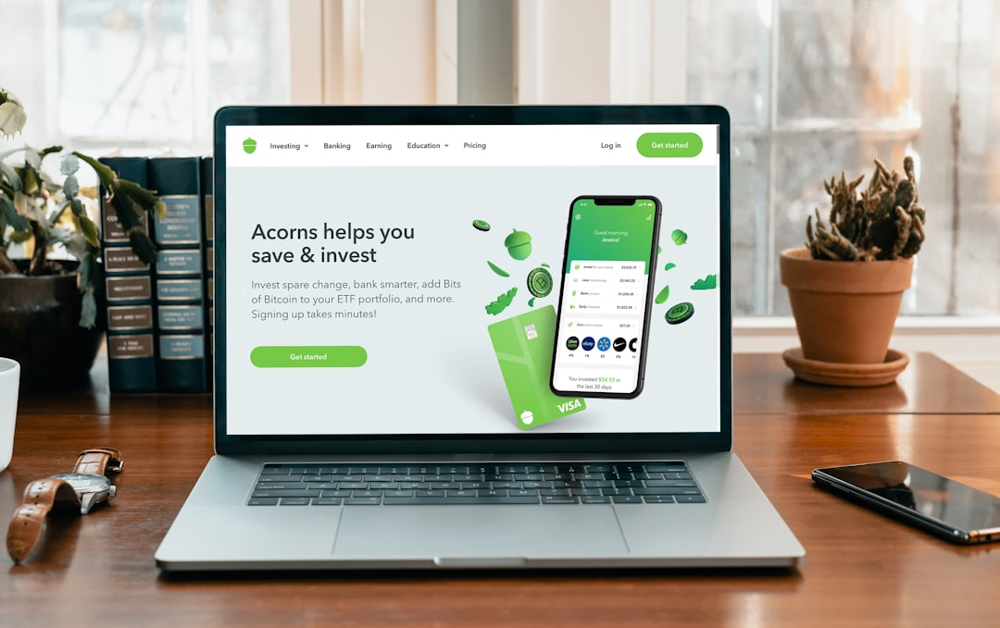

Come NexusAI Rivoluziona la Conversione dei Visitatori per Imprese, E-Commerce e Strutture Ricettive

Come contrastare l'abbandono dei visitatori online: soluzioni avanzate per Imprese, E-Commerce e Strutture Ricettive con NexusAI
- L’abbandono dei visitatori senza interazione rappresenta un serio problema di conversione per molte realtà digitali.
- Il mancato presidio nelle ore notturne genera lead e opportunità di contatto irrimediabilmente perse.
- NexusAI, con la sua tecnologia Shadow-Proxy AI Sales Overlay, implementa un assistente virtuale efficiente senza modifiche ai siti esistenti, incrementando le conversioni da contatti e prenotazioni.
Analisi approfondita della notizia e delle implicazioni operative
Nel panorama attuale di digitalizzazione, imprese, e-commerce, strutture ricettive e agenzie web si trovano di fronte a una sfida comune: l’alto tasso di abbandono dei visitatori online senza alcuna interazione. Questo fenomeno limita drasticamente le possibilità di conversione e porta a una perdita sostanziale di potenziali clienti che potrebbero essere convertiti in lead qualificati o prenotazioni effettive. Le piattaforme web tradizionali spesso non dispongono di strumenti efficaci per monitorare, coinvolgere e convertire visitatori che mostrano interesse ma non compiono azioni concrete.
Inoltre, un altro fattore critico riguarda le ore notturne, durante le quali i potenziali clienti possono visitare il sito ma non trovano alcun supporto né assistenza real-time, perdendo così opportunità importanti. Questo vuoto operativo genera un danno economico concreto e rallenta il ciclo di vendita.
La notizia evidenzia come molte realtà, pur adottando strumenti SaaS, continuino a non riuscire ad affrontare efficacemente la conversazione automatizzata e la raccolta continua di contatti, perdendo terreno rispetto alla competitività di mercato, specie in settori dove la tempestività e la personalizzazione del contatto sono fattori chiave.
Conseguenze e costi di non agire: perché persistere nel problema è rischioso
Ignorare la questione del mancato coinvolgimento e dell’abbandono dei visitatori ha ripercussioni devastanti a livello di business. In termini concreti, la perdita di lead durante le ore notturne e nelle fasi iniziali del funnel corrisponde direttamente a una diminuzione nei ricavi e in una capacità ridotta di scalare il proprio modello commerciale. Le aziende pagano un prezzo elevato in termini di tempo sprecato, investimenti in campagne marketing non ottimizzate e mancata fidelizzazione del cliente.
Il problema si aggrava ulteriormente quando si considera che non tutti i visitatori mostrano intenzioni immediate di acquisto o prenotazione: senza uno strumento capace di accoglierli, guidarli e trasformare l’interesse in contatto, il valore potenziale di ogni singola visita rischia di azzerarsi. Questo rappresenta un limite operativo per strutture che puntano alla crescita con approcci omnicanale, che si affidano a finezza analitica e automazioni.
Non intervenire significa rinunciare a fidelizzare clienti prima ancora che questi diventino consapevoli delle offerte o dei servizi disponibili, alimentando inefficienze e costi operativi superiori da gestire in seguito con strategie di recupero complesse e costose.
Come NexusAI risolve il problema con tecnologia avanzata e immediatezza operativa
NexusAI si inserisce come risposta tecnologica concreta e immediatamente implementabile al problema di abbandono dei visitatori e lead persi. La soluzione tecnologica Shadow-Proxy AI Sales Overlay consente di inserire un assistente virtuale intelligente direttamente su qualsiasi sito web esistente, senza bisogno di toccare o modificare il codice del cliente. Questo garantisce una rapidità di integrazione unica, minimizzando complessità di deployment e rischi tecnici.
Questo assistente AI è capace di interagire in maniera autonoma e personalizzata con i visitatori, raccogliendo prenotazioni e contatti anche nelle ore notturne, quando il personale umano non è disponibile. La presenza costante di un helpdesk virtuale aumenta significativamente le possibilità di conversione trasformando i visitatori passivi in lead attivi, incrementando il ROI delle attività digitali.
Con piani flessibili a partire da soli €49/mese (versione Base) fino a €99/mese per la versione Pro con funzionalità di prenotazione avanzata, NexusAI rappresenta un investimento accessibile in rapporto ai benefici di business generati. L’overlay digitale si integra in modo fluido e rispettoso dell’esperienza utente, contribuendo a migliorare anche l’immagine aziendale grazie all’innovazione tecnologica all’avanguardia.
| Gestione Tradizionale | Con NexusAI |
|---|---|
| Nessun supporto automatizzato nelle ore notturne | Assistente AI attivo 24/7 per acquisizione contatti |
| Modifiche complesse al sito per integrare chatbot | Overlay AI Shadow-Proxy senza toccare il codice |
| Alto tasso di visitatori che abbandonano senza lasciare dati | Convertitore proattivo di visite in lead/passaggi di prenotazione |
| Investimenti marketing con scarso recupero lead | Ottimizzazione ROI grazie a raccolta automatizzata di contatti |
💡 Ti è stato utile questo approfondimento?
Condividilo con un collega o un amico del settore Imprese, E-Commerce, Strutture Ricettive e Agenzie Web a cui potrebbe interessare!
FAQ - Domande frequenti per professionisti del settore
1. NexusAI richiede modifiche al sito web esistente?
No. Grazie alla tecnologia Shadow-Proxy AI Sales Overlay, NexusAI si integra senza toccare né modificare il codice del sito, garantendo un’installazione rapida e sicura.
2. Come NexusAI gestisce i lead nelle ore notturne?
L'assistente AI è attivo 24/7, in grado di interagire autonomamente con i visitatori, raccogliendo contatti e prenotazioni anche quando non c’è personale umano disponibile.
3. Quali sono i costi iniziali e come posso scegliere il piano giusto?
I piani partono da €49/mese per la versione Base, fino a €99/mese per la versione Pro, che include funzionalità avanzate per la gestione delle prenotazioni. La scelta dipende dalle esigenze specifiche di conversione e complessità del business.
Inizia Subito
Piani da €49/mese (Base) a €99/mese (Pro con prenotazioni).
Fonti Ufficiali e Risorse Esterne
Scopri l'Intelligenza Artificiale per la tua attività
Ottimizza i processi e aumenta le vendite con le soluzioni B2B di RM Studio.
Scopri NexusAI